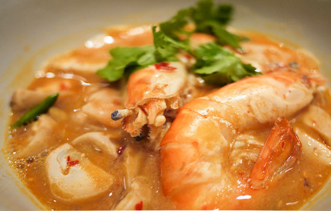
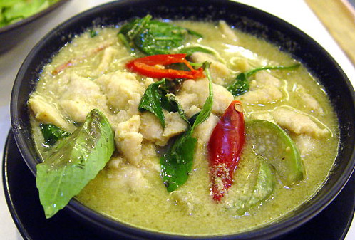
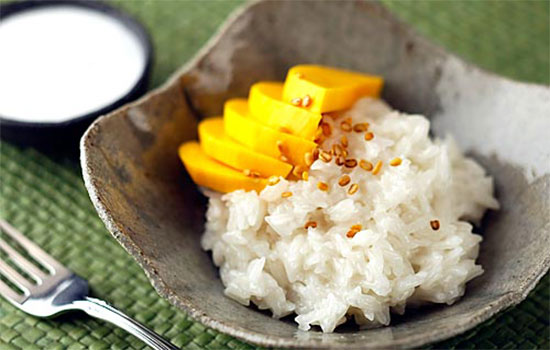
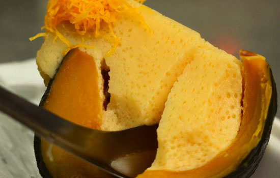

Soak the noodles about 30 minutes in room temperature water.
Heat and add 3 tablespoon of oil to the wok. Add the Shrimp and grill for 90 seconds. Add the Eggs. When
the eggs are not quite finished, add the Noodles, Sugar, Peanuts, Turnips and Paprika. Stir Fry until all
ingredients are mixed well and the noodles are wilted.
Season with the Fish Sauce, Oyster Sauce and vinegar. Then add Bean Sprouts, Green Onions and Red Chili.
Stir fry quickly ensuring everything is well combined. If you like wet noodle dishes de glaze with 5 oz. water
stock. If you like firmer dry noodles de glaze with only 2 oz. water stock. Place on Serving plate and garnish
with more Bean Sprouts and a Lemon wedge.
Pad Thai Ingredients (2-3 servings)
12 fresh Shrimp
250g Dry Rice Noodle
2-3 Fresh Bean Sprouts
2 tablespoons Chopped (1″) Green Onion
6 tablespoons Fish Sauce
6 tablespoons Oyster Sauce
3 teaspoons Vinegar
2 tablespoons Sugar
2 Tablespoons Preserved Turnip
2 Tablespoons Crushed Peanuts
1 Tablespoon Paprika
2 Eggs
1 Teaspoon Red Chili (for Spicy lover)
1/2 Lemon
Tom Yam Goong

Preparation
Add the shrimp stock, lemongrass, kaffir lime leaves, galangal and chilies to the pot.
Bring to a boil and let it boil for 3-4 minutes until you can smell the fragrance of the herbs from the pot.
When the soup is done simmering, add the oyster mushrooms, and bring the soup back to a boil.
Once the soup comes back to a boil, add the shrimp and when the soup just starts to bubble again, turn off the heat.
Let the residual heat of the soup cook the shrimp completely, another minute or so.
Add the lime juice, fish sauce, chili paste (if using) and sugar to your soup and stir.
Taste and adjust seasoning to your liking. If you’re not using the chili paste, you may find you need to add a bit more fish sauce/sugar.
But taste it first!
Tom Yam Goong Ingredients (4-5 servings)
4 cups chicken stock, or water
8-12 medium sized shrimp, head and shell on if possible
5-6 kaffir lime leaves, roughly torn or cut
1 lemongrass stalk, smashed and cut into 1-2 inch pieces
7-8 rounds galangal, thinly sliced.
Thai chilies, to taste, bruised and cut into large pieces
3-4 Tbsp. Thai chilli paste, optional
1/2 cup lime juice
3 Tbsp. fish sauce
1-2 tsp. sugar
3 cups oyster mushroom, cut or tear large ones into bite-sized pieces
Cilantro for garnish
Thai Green Curry

Preparation
Reduce 1 cup of coconut milk in a small pot over medium heat until clear coconut oil breaks away from the emulsion.
It will look like a film of shiny oil floating on top of the reduced coconut milk.
We are using this oil to sauté our curry paste.
Add the curry paste to this broken coconut milk and cook, breaking up lumps with a spatula, until aromatic, about 1 minute.
Roughly tear up kaffir lime leaves and add to the curry paste, sauté it for 30 more seconds to release the aroma.
Add the remaining 1.5 cup of coconut milk, ½ cup water and sugar.
Bring back to a boil and let simmer for 5 minutes.
Add the eggplant to the curry, cook for a 1-2 minutes until al dente.
Add the chicken to the curry, and cook until just done, another minute or so.
Remove from heat. Taste and add fish sauce to desired saltiness
(each brand of curry paste has different level of salt, so start with 1 tsp. and taste and adjust from there.)
While the curry is still hot, add Thai basil and stir to wilt and serve with rice.
Thai Green Curry Ingredients
2.5 cups coconut milk
¼ cup green curry paste (use 3 Tbsp. if you want less spicy)
5 Kaffir lime leaves, roughly torn.
½ cup water
2 cups Thai eggplant, cut into bite-sized pieces
2 Chicken breasts, cut into bite-sized strips, marinated 2 tsp. fish sauce.
½ cup Thai basil
1-2 tsp. Fish sauce, to taste
1 Tbsp. finely chopped palm sugar or regular sugar
Red chili garnish
Mango Sticky Rice

Preparation
Put the rice in a heatproof bowl and steam in a steamer, over medium heat, for about 20 minutes (based on one half cup of rice).
The rice should be cooked through with no hard, raw bits in the middle of the grains.
You can also cook the sticky rice without a steamer, using the splatter guard method.
Turn off the heat and let the rice stay in the steamer, with the lid on, while you prepare the coconut milk.
In a heatproof bowl, heat the coconut milk, sugar, and salt in the microwave on high for 2 minutes.
The sugar should completely dissolve and the mixture should be very hot.
Add the eggplant to the curry, cook for a 1-2 minutes until al dente.
Add the chicken to the curry, and cook until just done, another minute or so.
Remove from heat. Taste and add fish sauce to desired saltiness
(each brand of curry paste has different level of salt, so start with 1 tsp. and taste and adjust from there.)
Take the sticky rice out of the steamer. Pour the hot coconut mixture on top of the rice and gently stir.
(It may look like your rice is drowned in coconut water, but the liquid will all be absorbed.)
Cover the bowl tightly with plastic wrap and let the mixture stand at room temperature, undisturbed, for half an hour.
The coconut sticky rice is to be served at room temperature along with fresh mango.
The sesame seeds are optional.
The rice can be refrigerated and reheated in the microwave, but the texture of reheated sticky rice isn’t as good as it is when freshly made.
Freezing sticky rice is not recommended.
Thai Mango Sticky Rice Ingredients
½ cup raw Thai sticky rice (no substitute), soaked anywhere from one to 5 hours, drained, and rinsed to get rid of excess starch
½ cup good coconut milk
½ cup sugar
¼ teaspoon salt
One perfectly ripe good mango and peeled and cut into thick slices
Sang Kaya Fug Tong (Pumpkin and Custard)

Preparation
Cut out the lid of the pumpkin and scoop out all the seeds. Rinse the pumpkin and let dry, upside down, on a towel.
In a pot, add palm sugar, most of the coconut milk (reserve about 2 Tbsp.) and pandan leaf.
Cook over medium low heat just until the sugar is all dissolved. Set aside.
Add the reserved coconut milk to the rice flour and stir to dissolve.
In a large mixing bowl, add all the eggs, the dissolved rice flour, and salt; whisk until well combined. Slowly whisk in the palm sugar mixture.
Strain the custard into a spouted container such as a large measuring cup.
Set the pumpkin into a bowl just large enough to hold it. Alternatively, set the pumpkin into a larger bowl and support the sides with scrunched up aluminum foil.
Pour the custard into the pumpkin, just until it touches the pumpkin flesh on the top.
Steam over medium heat for 50 minutes to an hour, after an hours use a wooden skewer into the center to test for doneness.
If it comes out clean, it is done! Let cool completely before cutting.